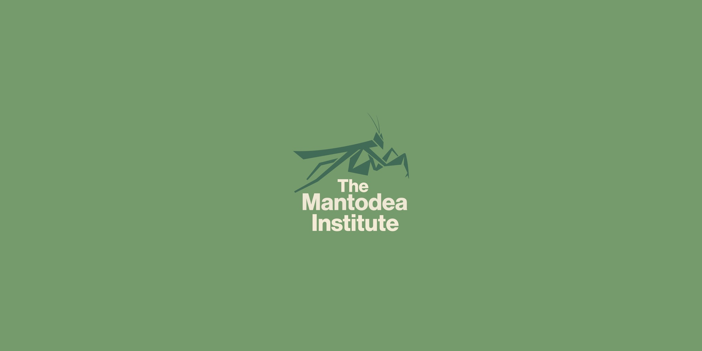
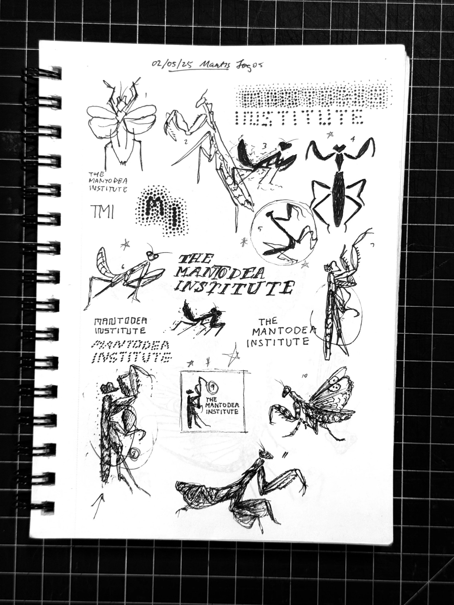
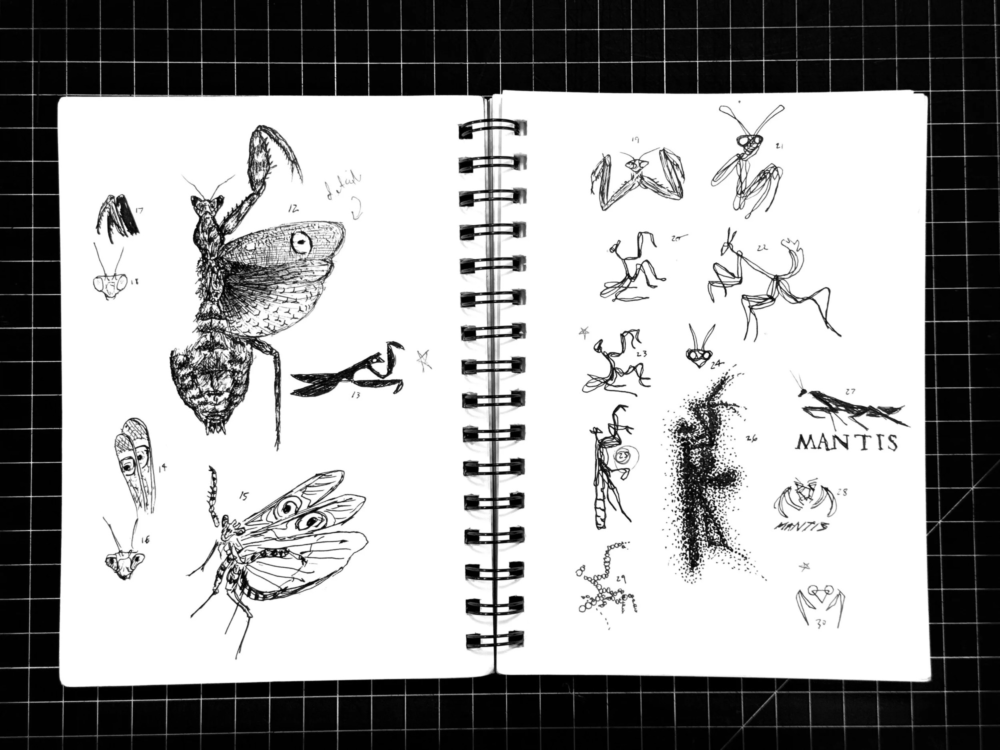
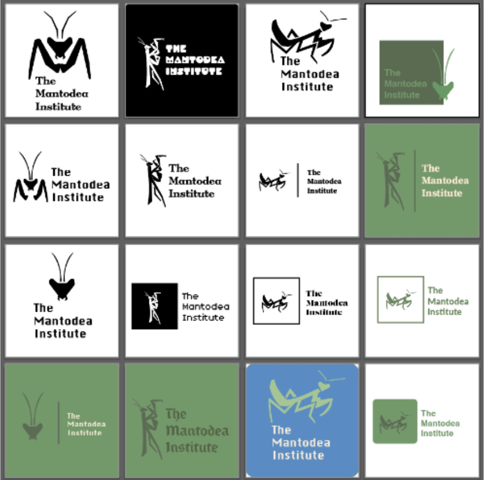
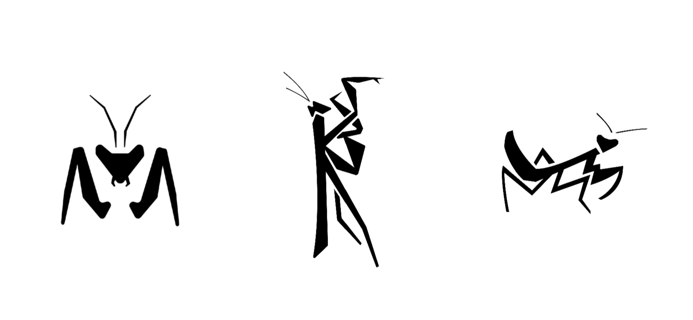
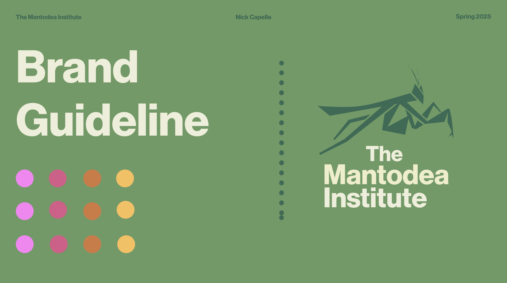
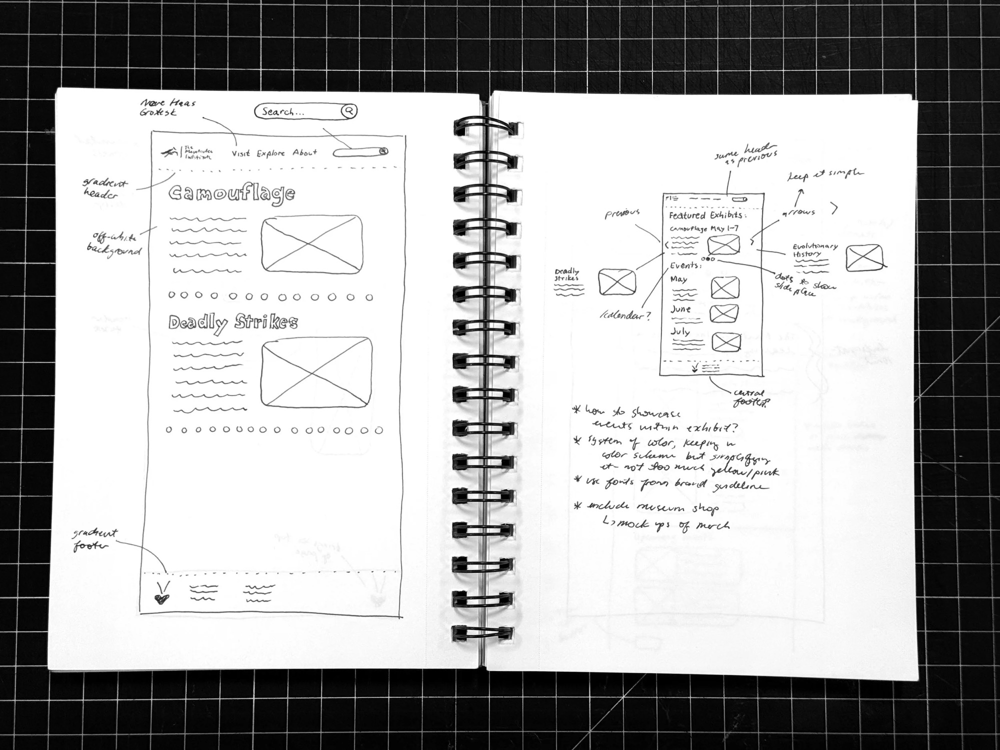
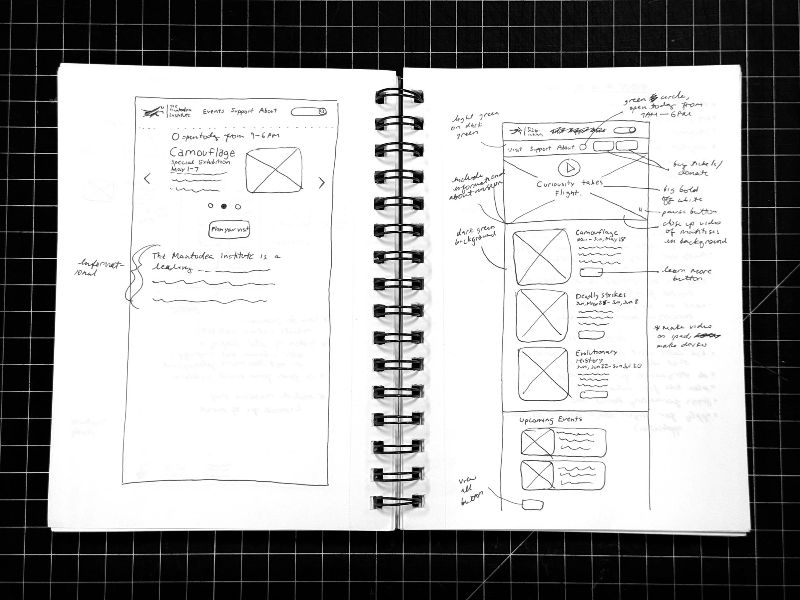
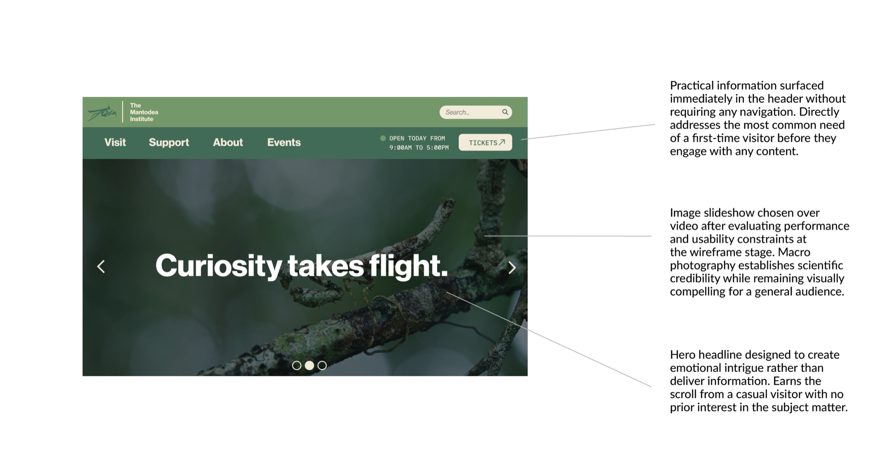
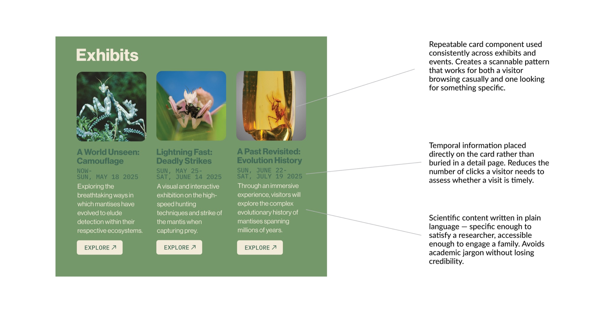
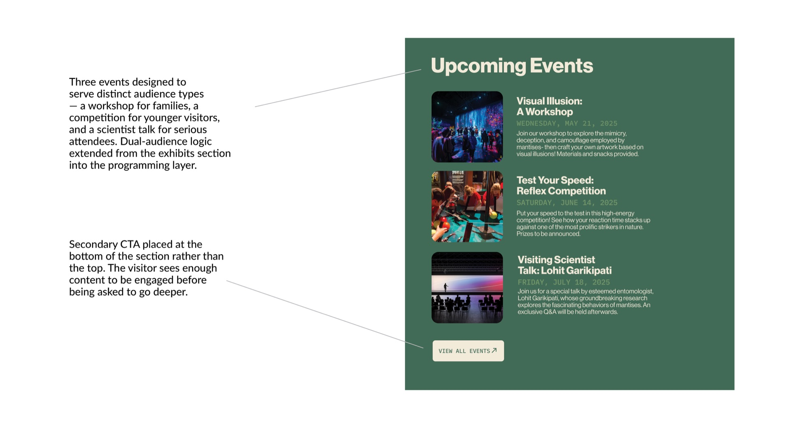
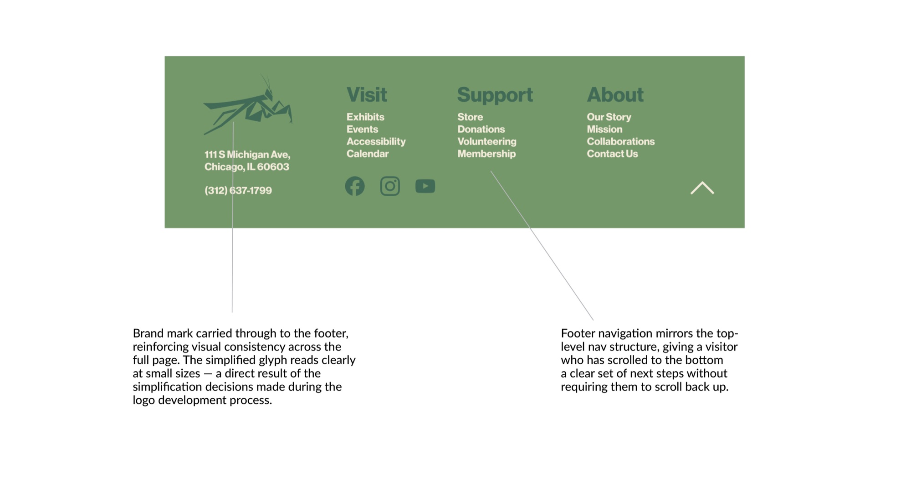
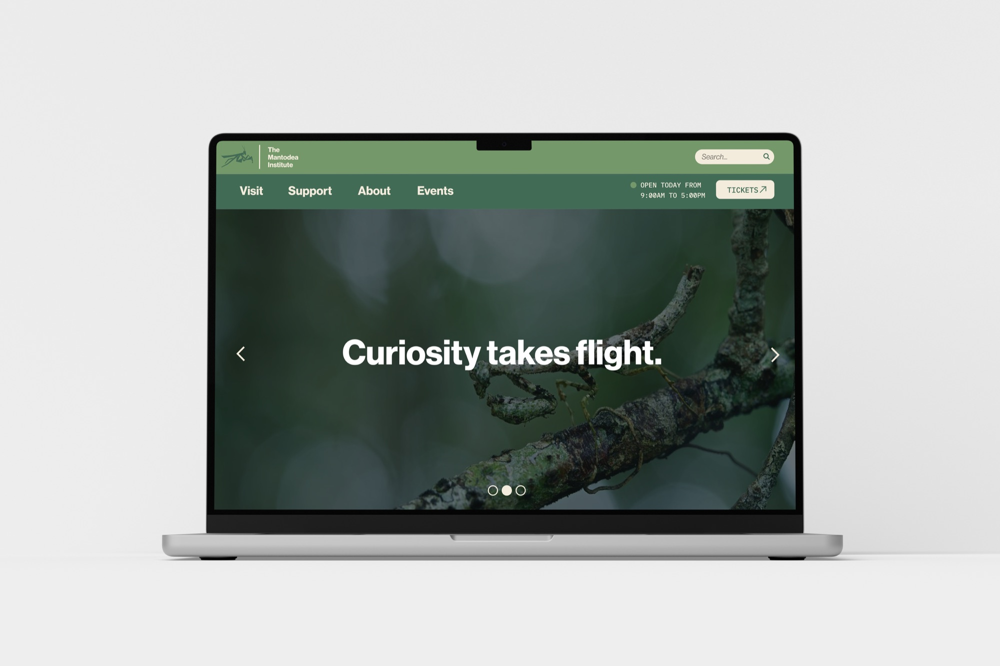
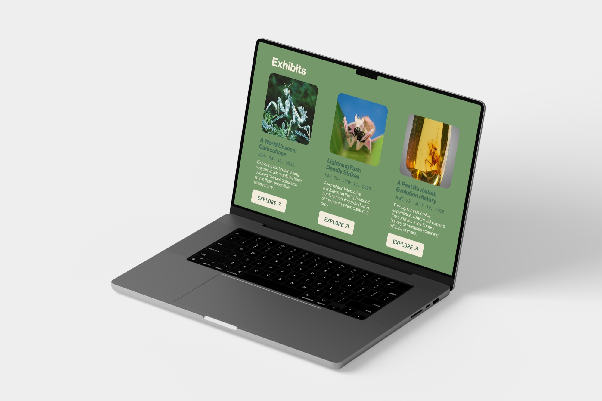
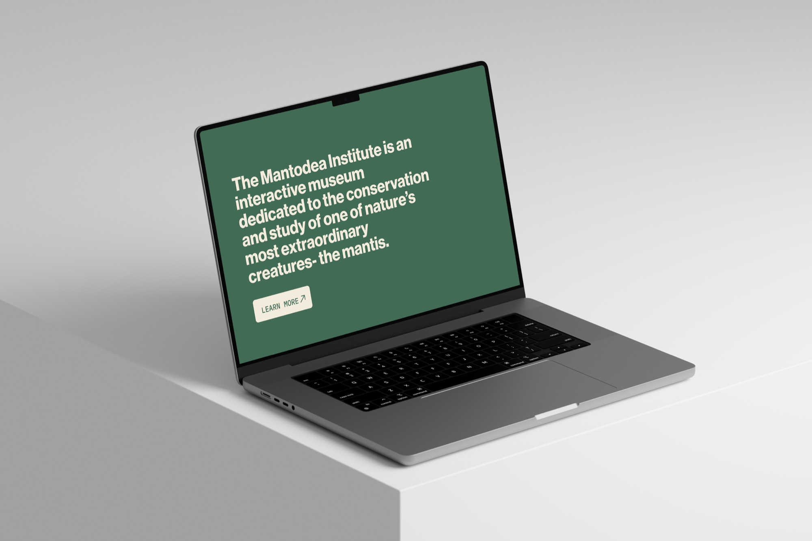
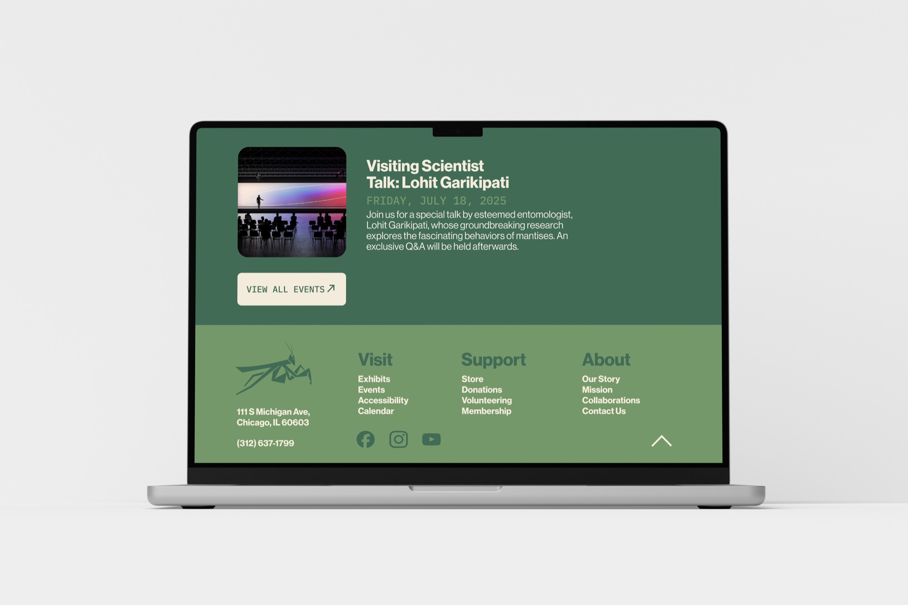
The Mantodea Institute
A fictitious interactive museum dedicated to the conservation and study of the praying mantis — a complete brand identity and digital experience built from zero.
Overview
The design challenge was building a complete brand identity and digital experience from zero — no existing assets, no client direction, and no established audience to design for. Every decision, from the logo mark to the homepage layout, had to be made and justified independently. What started as a logo project became something larger: a full design system and UX interface built from a single visual idea.
The Customer
The Mantodea Institute serves two distinct visitors. The first is a family or casual visitor with no prior knowledge of mantises — they need immediate visual intrigue, practical information, and an experience that feels approachable rather than intimidating. The second is a student or researcher who needs the institution to feel credible and scientifically grounded before they’ll engage seriously with the content. These two users pull in different directions: one needs simplicity and spectacle, the other needs rigor and depth. The homepage needed to serve both without compromising either.
The Problem
Museum websites tend to fail in one of two directions. They either lean too heavily on academic language and dense content, losing the casual visitor before they make it past the hero section, or they oversimplify to the point where a serious visitor finds nothing of substance. Beyond tone, there’s an information architecture problem too — museum websites often bury practical information like hours, tickets, and upcoming events deep in navigation, forcing visitors to hunt for what they need. For the Mantodea Institute, the design needed to solve both problems simultaneously: accessible language and credible content organized within a clear, intuitive structure that gets every type of visitor where they need to go without friction.
The Approach
The project began with the logo, not the interface. An extensive sketching phase came first — loose, exploratory drawings focused on understanding the mantis’s form, posture, and what makes it instantly recognizable. When the work moved into Illustrator, early digital iterations were too complex and lost clarity at smaller sizes. The solution was simplification: focusing on silhouette, proportion, and negative space rather than detail. That constraint turned out to be the most important design decision of the project. The simplified mark pushed the entire brand toward a cleaner, more minimal direction, away from heavy texture and illustration, toward space, structure, and clarity. What started as a single logo ended up setting the tone for a much larger visual language. That shift wasn’t something I planned from the beginning, but it felt like the right direction as the project developed.
With the brand established, the UX process began with low-fidelity wireframes to work through layout, hierarchy, and user flow before touching any high-fidelity design. The wireframes helped me think through how a visitor moves through the homepage, from the hero section down to featured exhibits and upcoming events, and to test structural decisions before committing to them visually. An early decision to use video as the hero element was reconsidered at the wireframe stage after evaluating performance and usability constraints. The pivot to an image slideshow fit the brand better and gave the page more flexibility while still setting a strong visual tone. By resolving these decisions at low fidelity, the move into Figma was focused on refinement rather than problem solving.
The Solution
The homepage is structured around a single organizing principle: every section needs to serve both a casual visitor and a serious one without forcing either to work for what they need. The navigation bar surfaces hours and ticket purchasing immediately, before any scrolling, addressing the most practical needs of a first-time visitor before they’ve read a word of content. The hero section leads with macro photography of a mantis in its natural environment and a headline designed to create intrigue rather than inform. “Curiosity takes flight” earns the scroll from a visitor who arrived with no prior interest in mantises.
Below the hero, the exhibits section presents three current shows as visual cards with dates, brief descriptions, and explore CTAs. The content is scientifically grounded but written in plain language, specific enough to satisfy a researcher scanning for credibility, accessible enough to engage a family deciding whether to visit. The same card component is used consistently across exhibits and events, creating a repeatable pattern that makes the page easy to scan regardless of where a visitor enters.
The events section extends the dual-audience logic further. Three upcoming events span different engagement levels, a hands-on workshop for families, a competitive activity for younger visitors, and a scientist talk for serious attendees, demonstrating that the institution serves a broad community without fragmenting the experience visually.
The footer carries the brand system through to its least glamorous element, with the mantis glyph, organized navigation, address, and contact information all present and consistently styled.
The Outcome
The Mantodea Institute homepage demonstrates what happens when a design system is built from the ground up rather than applied after the fact. The logo simplification process wasn’t just a branding exercise, it established the visual rules that governed every subsequent decision, from the generous spacing and limited color palette to the consistent card components and restrained typography. The result is an interface where every element feels like it belongs to the same family because it does.
The project also demonstrates adaptability. Early assumptions were tested and revised, the hero video became a slideshow, complex logo iterations were stripped back to their essential form, and a class assignment became a complete UX case study. The ability to recognize when a direction isn’t working and pivot without losing momentum is visible in the final product. The homepage is calm, credible, and easy to navigate, not despite the constraints and setbacks of the process, but partly because of them.